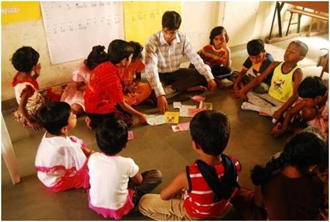

The Teach For India Fellowship program is a 2 year full-time paid commitment in which we place the most promising graduates and professionals as full-time teachers in under-resourced and low-income schools.
The Fellowship program is rigorous, challenging and provides Fellows an opportunity to develop themselves as leaders and simultaneously transform the lives of the children under their care. Prior to and during the two-year Fellowship, Teach For India provides Fellows with the technical skills and leadership training required to achieve the goals they have set for themselves and their students.
This training includes a 5 week, residential training Institute before they start teaching followed by on-going training and support throughout the two years delivered through conferences, training sessions, leadership forums, online resources and on the ground mentoring by a Program Manager. In the 2nd year of the program, each Fellow undertakes an assignment called the 'Be The Change' project wherein they ideate, plan and execute a project that benefits their classroom, the school or the society as a whole.
There are four application rounds for the 2016 Fellowship. Application Deadlines: August 25th, October 27th, December 8th, February 2nd.